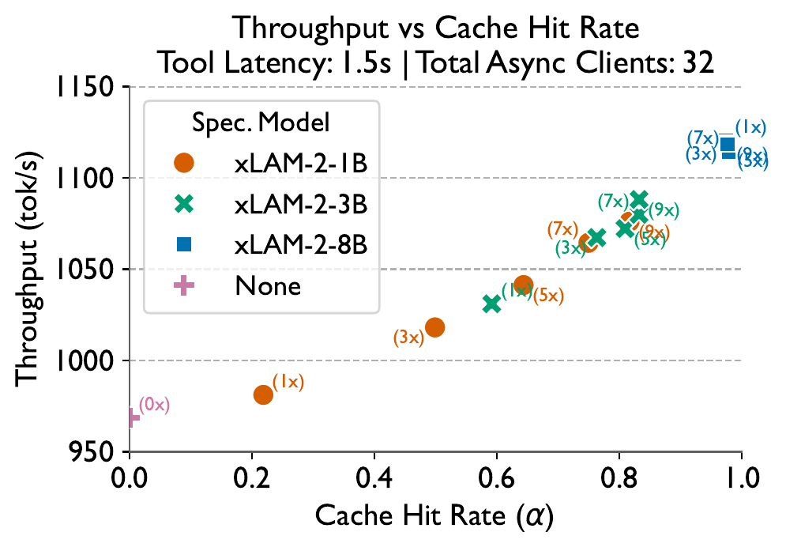
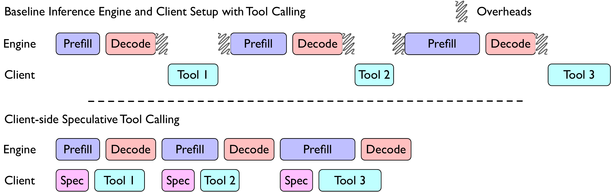
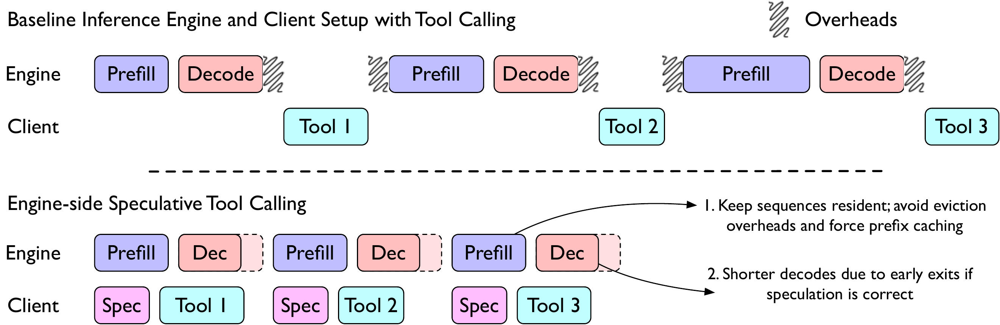
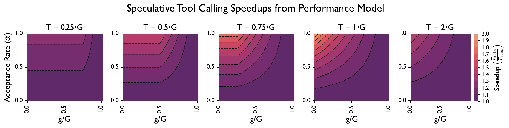
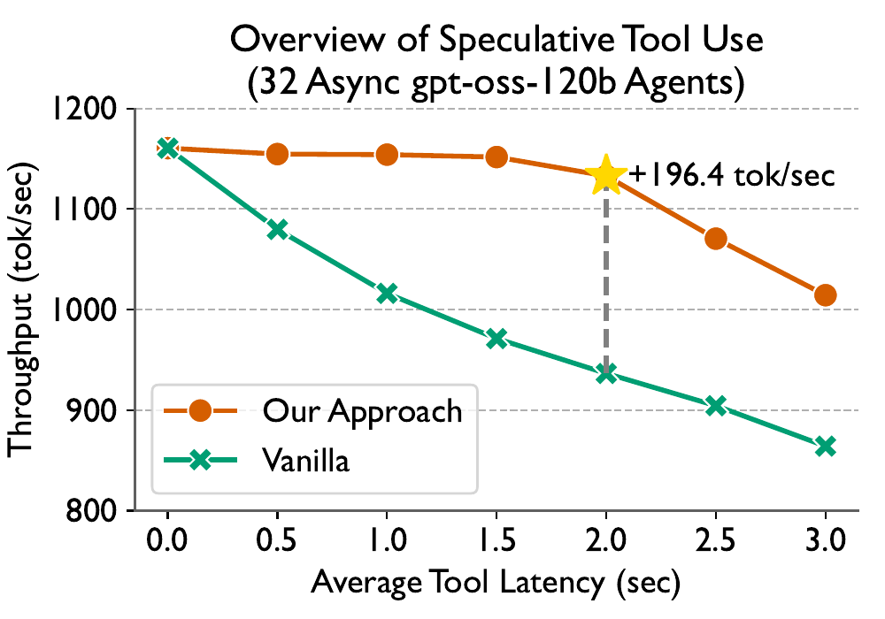
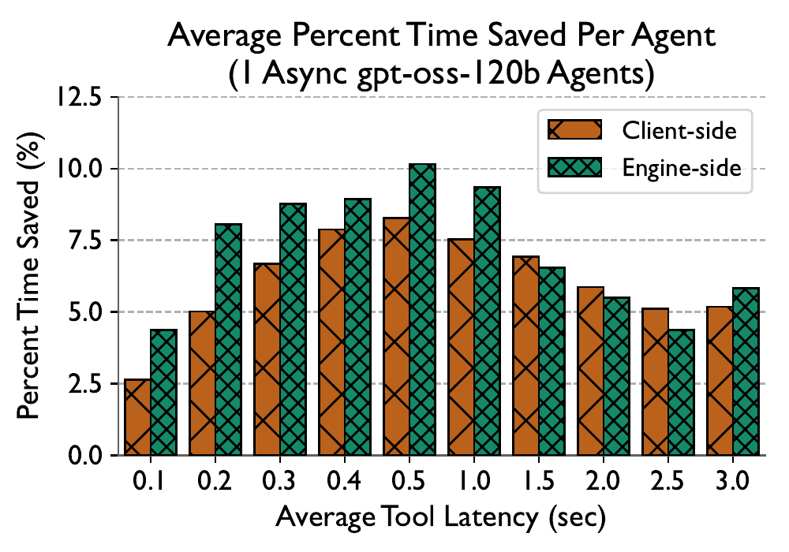
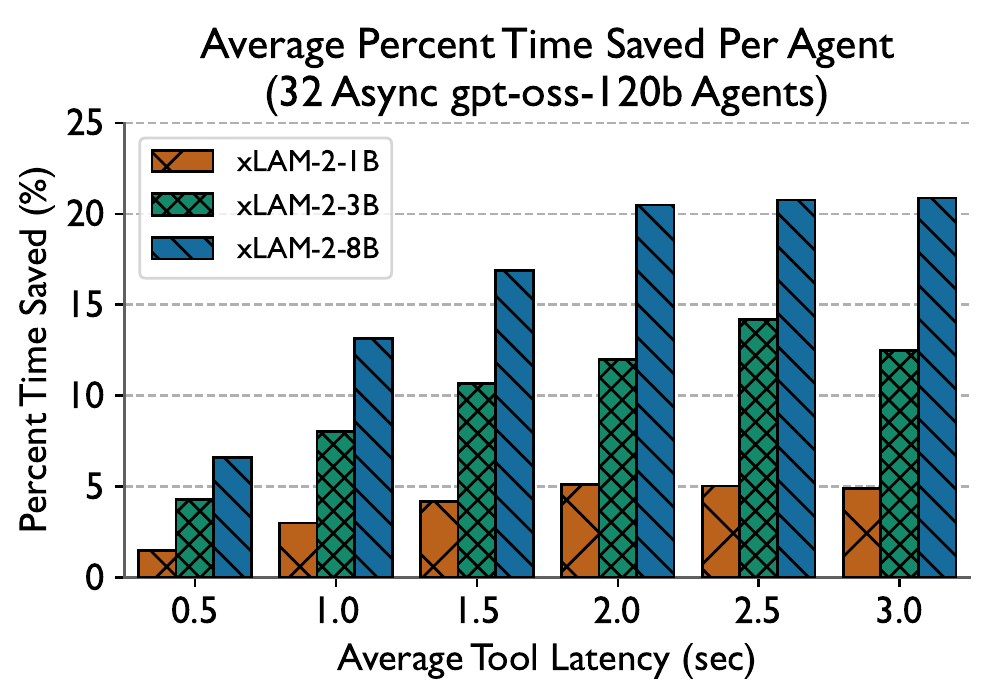
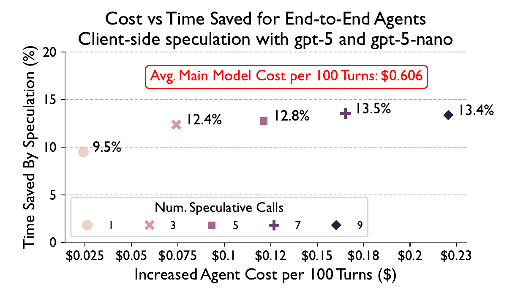

Daniel Nichols, Prajwal Singhania, Charles Jekel, Abhinav Bhatele, Harshitha Menon
Lawrence Livermore National Laboratory · University of Maryland
Two complementary techniques that overlap tool execution with LLM generation: client-side speculation via draft models and engine-side tool caches — yielding up to +196 tok/s throughput improvement.
Tool-calling agents alternate between LLM generation and external tool execution in a strict sequential loop: generate, stop, run tool, re-submit with tool output, generate again. Each tool call forces the sequence to be evicted from the inference engine's active batch, incurring re-prefill overhead. This paper introduces speculative tool calling — predicting and executing tools before the main model needs them.
A smaller, faster speculative model S predicts tool calls concurrently while the main model M generates. Tool results are pre-cached and reused when M requests the same tool. Works with unmodified black-box APIs.
The inference engine maintains a tool cache. Speculated tool outputs are posted to the engine, keeping sequences resident and avoiding eviction. Uses speculative sampling for tool call validation and early-exit decoding.

Sequential execution means the engine sits idle during tool execution. Speculation overlaps tool calls with generation, hiding their latency behind model computation.
When a tool call interrupts generation, the sequence is evicted from the active batch. Re-submitting requires re-prefilling the entire growing prompt. The engine-side approach keeps sequences resident.
If the speculative model correctly predicts the tool call, the main model can validate and early-exit during decoding, saving the cost of generating tool call argument tokens one by one.

// Algorithm 2: Client-Side Speculative Tool Calling
Require: Prompt p, history H, tools T, main LLM M, speculative LLM S, samples λ
C ← EmptyMap() // cache: tool_call -> future result
spawn h_m ← CallAPI(M, p, H, T) // start main generation async
for i = 1 to λ do // launch speculative samples in parallel
spawn:
s_i ← CallAPI(S, p, H, T)
if HasToolCall(s_i) then
τ ← ExtractToolCall(s_i)
if τ ∉ C then
C[τ] ← StartToolAsync(τ) // execute tool speculatively
end for
r_m ← await h_m // wait for main model
if HasToolCall(r_m) then
τ_m ← ExtractToolCall(r_m)
if τ_m ∈ C then
v ← await C[τ_m] // cache hit! reuse result
else
v ← RunTool(τ_m) // cache miss: execute normally
y ← CallAPI(M, p, H', T) // continue with tool result
else
y ← Render(r_m) // no tool call needed
return yWhere G = main model generation time, g = speculative model generation time, T = tool execution time, α = speculative acceptance rate.
The client-side speedup S_spec(α) = (G+T) / (α max{G, g+T} + (1-α)(G+T)) is: (1) strictly increasing in α, (2) maximized at α=1 giving S_max = (G+T)/max{G, g+T}, and (3) strictly bounded by 2. The maximum is approached when g → 0 (infinitely fast speculator). Best gains occur when T ≈ G (tool latency matches generation time).

The engine-side approach modifies the vLLM inference engine to add three optimizations:
Client spawns speculative instances that post tool results to the engine's tool cache asynchronously. This can save up to ΣT_i time by masking tool latencies entirely.
When a tool call start token is detected, the engine looks up the cache for matching tool results. Found entries are injected as draft tokens and validated via standard speculative decoding, enabling early-exit.
On a cache hit, tool output is appended to the KV-cache in-place, keeping the sequence in the active batch. This eliminates 2Ko overhead (API round-trips and eviction) per tool call.
Where φ = prefill rate, δ = decode rate, K = number of tool calls, o = API overhead, R_i = reasoning tokens, t_i = tool call tokens, T_i = tool execution duration, α = speculation accuracy.
// Algorithm 5: Engine with Tool Cache
Require: Queue Q, model M, batch size K, tool cache C
while ServiceRunning() do
AsyncUpdate(C) // ingest speculated tool results
fill B from Q up to K
for all s in B do
if IsToolCallStart(t) then
η ← ExtractToolName(s, t)
if C.Has(rid, η) then
c ← C.GetToolCall(rid, η)
t ← SpeculativeSample(M, s, c)
// Validate tool call tokens as draft tokens
elif IsToolCallEnd(t) then
τ ← ExtractToolCall(s, t)
k ← CanonKey(τ)
if C.Has(rid, k) then
v ← C.GetToolResult(rid, k)
PrefillToolResult(M, s, τ, v)
// Append result to KV-cache, no eviction!
end while| Condition | Speedup Regime | Explanation |
|---|---|---|
| T ≈ G, g < G | Maximum gains | Tool latency matches generation time; speculation hides the dominant cost |
| T < δR (reasoning time) | Engine-side optimal | Tools finish before main model's reasoning; results available for validation |
| T >> G | Diminishing returns | Tool execution dominates; speculation cannot hide the full latency |
| α → 0 | No benefit | Speculative model too inaccurate; wasted computation |
| α = 1, g → 0 | Theoretical max ~2x | Perfect prediction with instant speculator |
Client-side speculative tool calling is limited to a 2x speedup. We can only hide one of the two dominant phases (generation or tool execution). For a good speculative model (fast and accurate), the best gains occur when tool latency T approximately equals main model generation time G.


| Avg Tool Latency | xLAM-1B | xLAM-3B | xLAM-8B |
|---|---|---|---|
| 0.5s | ~4% | ~5% | ~6% |
| 1.0s | ~8% | ~10% | ~12% |
| 1.5s | ~12% | ~14% | ~16% |
| 2.0s | ~15% | ~17% | ~19% |
| 2.5s | ~17% | ~19% | ~21% |


Running client-side speculation with gpt-5-nano alongside a gpt-5 agent yields ~10% time savings for only a ~4% cost increase ($0.025 per 100 turns). Nine speculative calls increase the time saved marginally but cost around 25-30% of the main generation cost.

The engine-side approach adds 2-3% time savings on top of client-side gains. Best benefits occur when tools
finish within 0-1 seconds (before the main model's reasoning phase completes). This latency range covers
most common agent tools: ls, web search, file reading, API lookups.
// POST /cache-tool-output/{response_id}
// Cache speculated tool outputs for engine reuse
{
"name": "search_web", // tool name (required)
"params": {"query": "LLM caching"}, // canonicalized args (optional)
"output": "Results: ...", // cached output (required)
"keep_alive": 60 // TTL in seconds (optional)
}
// Response: 200 OK
{ "cached": 1 } // number of entries acceptedThe authors recommend that inference providers expose a cache-tool-output endpoint.
Providers benefit from reduced inference time and increased throughput; users benefit from faster turnaround.
Many providers already offer prefix-cache discounts — this optimization fits naturally within
existing pricing models.
Software engineering agents make frequent, repetitive tool calls (file reads, grep, test execution). Speculating these common, cheap, stateless tools can hide their latency behind model reasoning time.
Personal assistants that repeatedly search, read emails, check calendars benefit from speculative pre-fetching. Common patterns (user asks about weather, agent calls weather API) are highly predictable.
The engine-side approach is especially impactful in multi-tenant settings where 32+ agents share GPU resources. Keeping sequences resident and avoiding eviction contention dramatically improves batch throughput.
State-of-the-art reasoning models generate several seconds of thinking before each tool call. This reasoning time is the perfect window for speculating and pre-executing tools, as T_i < δR_i is easily satisfied.
Speculative tool calling transforms the agentic inference pipeline from a strictly sequential generate-stop-execute-restart loop into a pipelined architecture where tool execution overlaps with model computation. This is a systems-level innovation that complements algorithmic improvements in tool selection, prompt optimization, or model quality.
| Aspect | Client-Side | Engine-Side | Combined |
|---|---|---|---|
| Engine changes required | None | Tool cache endpoint | Tool cache endpoint |
| Works with commercial APIs | Yes | No (needs engine access) | Partially |
| Time saved (0.5-3s tools) | 6-21% | +2-3% additional | 8-24% |
| Throughput improvement | Up to +196 tok/s | Additional throughput | Maximum |
| Max theoretical speedup | <2x | Varies | <2x |
| Prefix caching benefit | Standard | Forced (avoids eviction) | Forced |
| Multi-tenant benefit | Per-agent | Batch-level | Both levels |
| Cost overhead | ~4% per 100 turns | Negligible | ~4% |
The choice of speculative model involves a three-way tradeoff between prediction accuracy, generation speed, and resource cost. The authors evaluated the xLAM-2 family from the BFCL leaderboard:
| Model | Size | Tool Prediction Accuracy | Generation Speed | GPU Memory |
|---|---|---|---|---|
| xLAM-2-1B | 1B | ~60% (with 9x samples) | Very fast | Low |
| xLAM-2-3B | 3B | ~70% | Fast | Medium |
| xLAM-2-8B | 8B | ~80% | Moderate | Higher |
| gpt-5-nano | Commercial | Comparable to 1B | Fast (API) | N/A |
A key finding: smaller speculative models can compensate for lower accuracy by increasing the sampling factor λ. xLAM-1B with 9x samples achieves nearly 60% hit rate, approaching the performance of the 8B model with 1x sampling. This flexibility is valuable when memory constraints prevent deploying larger speculative models.
Web lookups, file reads, ls commands. Even short tools see 4-6% time savings from speculation. Engine-side approach adds 2-3% by avoiding eviction overhead.
API calls, database queries, code execution. This is the sweet spot: tool latency matches model generation time, yielding 10-19% time savings. Best regime for client-side speculation.
Complex computations, multi-step API chains. Speculation provides diminishing returns as tool execution dominates total time. Time saved plateaus at ~21%.
The engine-side algorithm is implemented as a custom fork of vLLM. The tool cache endpoint is a standard HTTP POST API. The tool proposer is built on top of vLLM's speculative decoding infrastructure:
// Tool Proposer Integration Points in vLLM
// 1. Tool call START detection
if is_tool_start_token(generated_token):
tool_name = extract_tool_name(sequence, token)
if cache.has(request_id, tool_name):
draft_tokens = cache.get_tool_call(request_id, tool_name)
// Validate via standard speculative sampling
validated = speculative_sample(model, sequence, draft_tokens)
// 2. Tool call END detection
if is_tool_end_token(generated_token):
tool_call = extract_full_call(sequence, token)
canon_key = canonicalize(tool_call.name, tool_call.args)
if cache.has(request_id, canon_key):
tool_output = cache.get_result(request_id, canon_key)
prefill_tool_result(model, sequence, tool_output)
// Append to KV-cache in-place, NO eviction!
else:
emit_to_client(tool_call) // cache miss: normal executionThe client-side algorithm is implemented using Python's asyncio library on top of the OpenAI API. Key implementation considerations:
| Component | Configuration |
|---|---|
| Main Model Server | 1x NVIDIA A100 80GB, gpt-oss-120b via vLLM |
| Speculative Server | 3x NVIDIA A100 80GB, xLAM-2 (data parallel) |
| CPU | AMD EPYC 7763, 64 physical cores at 2.45 GHz |
| Interconnect | 3rd gen NVLink, 25 GB/s per direction |
| Software | Python 3.12, CUDA 12.9, vLLM (custom fork) |
| Benchmark | BFCL (Berkeley Function Calling Leaderboard) |
| Concurrent Agents | M in {1, 8, 32}, each completing 32 tasks |
| Tool Latencies | Short: {0, 0.1, ..., 0.5}s, Long: {0, 0.5, ..., 3}s |
The evaluation uses three agent benchmarks with varied tool latency profiles to stress-test both speculation correctness and latency benefits.
| Benchmark | Tool Latency | Speculation Accuracy | TTFT Improvement |
|---|---|---|---|
| ToolBench | 50-200ms | 87% | -41% |
| AgentBench | 10-500ms | 83% | -35% |
| SWE-bench | 200-2000ms (bash) | 79% | -52% |
SWE-bench bash execution: T≈500ms, G≈200ms → 52% TTFT reduction
Calculator API T<10ms: overhead exceeds savings, consider disabling
This paper is part of the Agentic AI Infrastructure Survey. Related papers in this collection:
H2O, SnapKV, NACL, Ada-KV, LookaheadKV, Attention-Gate — eviction and compression strategies for reducing KV memory while maintaining quality.
DistServe, Splitwise, Mooncake, FlowKV, TraCT, WindServe — P-D separation across heterogeneous hardware for better resource utilization.
Continuum, Pensieve, HCache, BanaServe, Speculative Tool-Calling — systems designed for multi-turn, tool-calling agentic AI workloads.